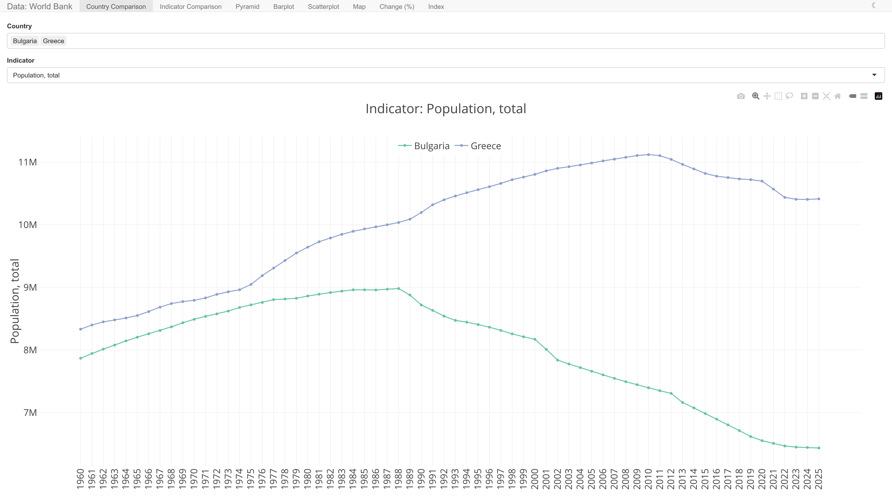
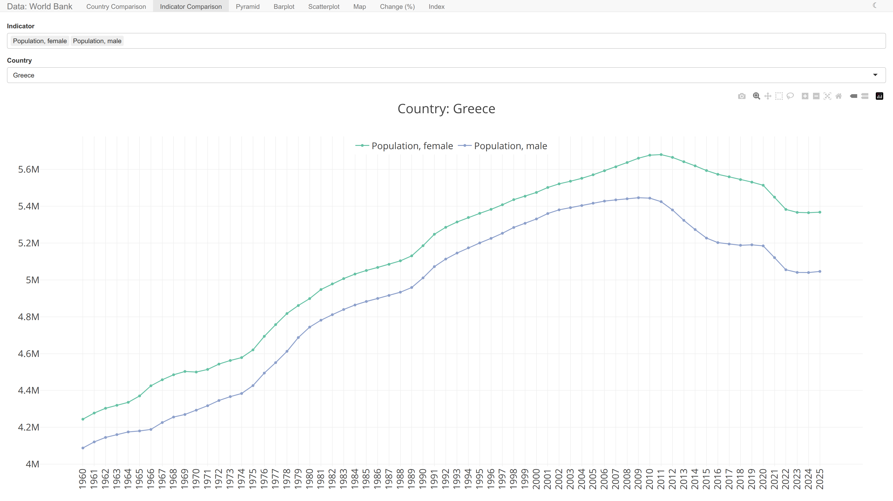
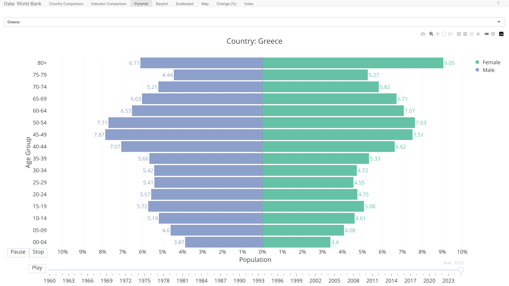
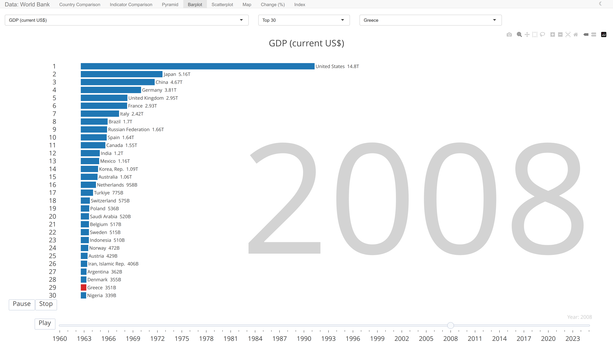
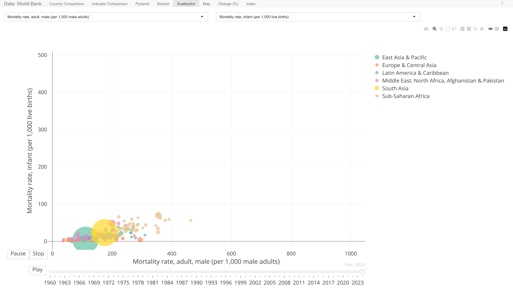
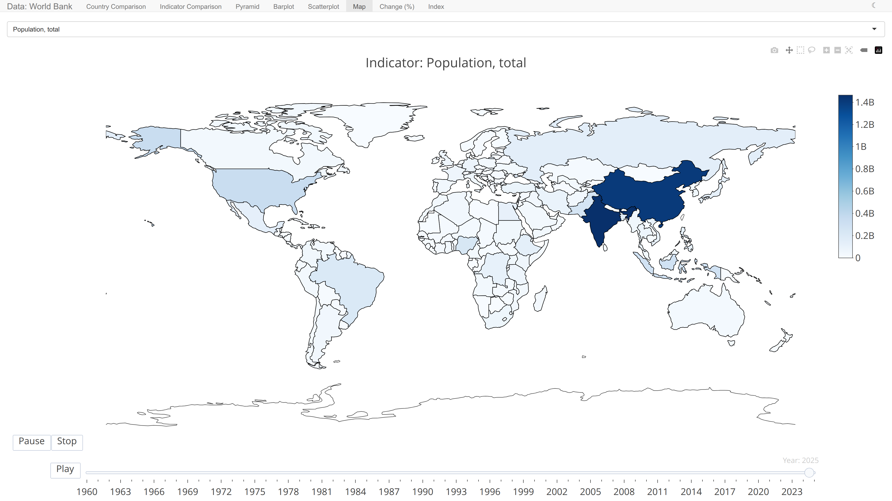
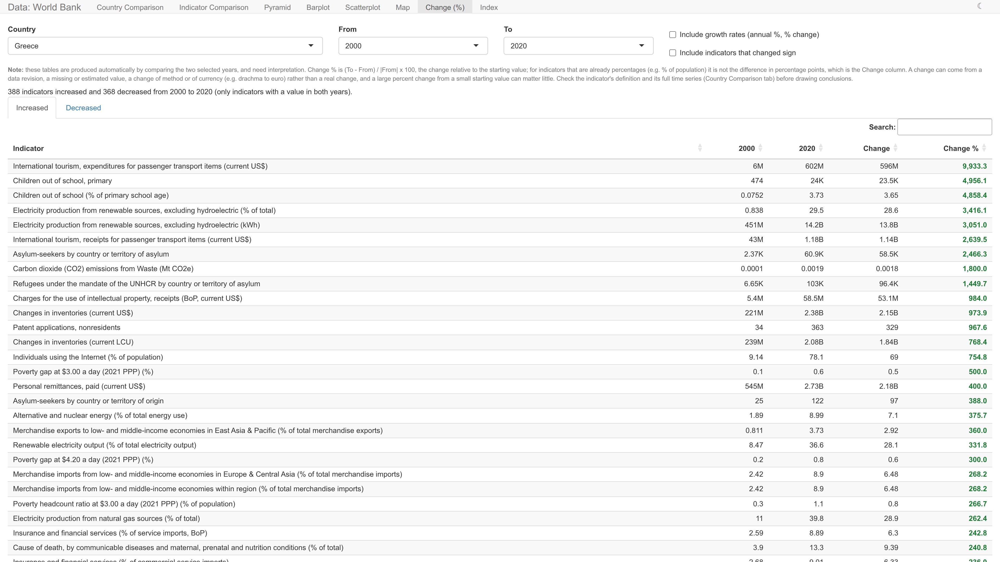
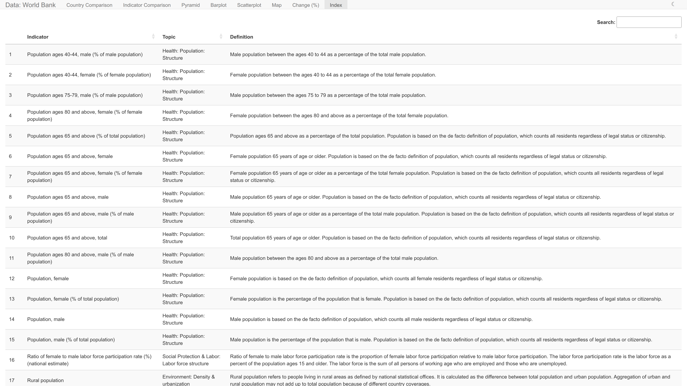

Open the live app · Help pages
What it does
A Shiny application, built as a golem package, for exploring World Bank development indicators through interactive country comparison, indicator comparison, population pyramid, ranked bar chart, correlation scatter, and choropleth map views.
Features
Each feature below is a Shiny module rendered as its own tab in the app:
- 📊 Country Comparison: plot one indicator’s value over time as one line per selected country
- 📈 Indicator Comparison: plot several indicators’ values over time for a single country
- 👥 Pyramid: animated population pyramid by age group and sex, for a selected country, over time
- 📉 Barplot: animated ranked bar chart of one indicator per country, ranked by value in the most recent year
- 🔍 Scatterplot: animated bubble scatter correlating two indicators, bubble size by population, colored by region
- 🗺️ Choropleth: animated choropleth map of one indicator by country, over time
- 📋 Index: searchable table listing every indicator name available in the data
- ℹ️ About: what the app shows, the source and license of the data, and the acknowledgments
Installation
1. Install R
Download R from CRAN, for Windows, macOS or Linux, and run the installer.
2. Install RStudio or Positron
An editor makes R easier to use. It is optional, and both are free, from Posit:
- RStudio Desktop
- Positron, which also runs Python
3. Install golemworldbank
Run one of these in RStudio, Positron or the R console. Each one also installs the packages golemworldbank needs.
From R-universe (recommended)
install.packages(
"golemworldbank",
repos = c("https://sedzinfo.r-universe.dev", "https://cloud.r-project.org")
)R-universe builds golemworldbank from this repository after every change, ready to install on Windows, macOS and Linux, and CRAN provides the packages it needs.
From GitHub
install.packages("pak") # once
pak::pak("sedzinfo/golemworldbank")From the release tarball
The latest release has the source tarball and the PDF manual, rebuilt from main on every change:
install.packages("pak") # once
pak::pak("url::https://github.com/sedzinfo/golemworldbank/releases/download/latest/golemworldbank_0.0.1.tar.gz")From a clone of the repository, with Git LFS
The package data are normal files in the repository. Only the raw World Bank downloads that financial_indicators.R reads (in data/ and data-raw/) are stored with Git LFS: you need them, and Git LFS, only to regenerate the data (see Update data). Without Git LFS, the clone and the installation below still work, and those files stay small pointer files.
1. Install Git and Git LFS, once per computer. Git for Windows includes Git LFS; on macOS run brew install git-lfs, on Ubuntu or Debian sudo apt install git-lfs, or use the installer from git-lfs.com. Then turn it on:
2. Clone the repository and download the LFS files:
git lfs ls-files lists the files in Git LFS. If you cloned before installing Git LFS, they are small pointer files: run git lfs install and git lfs pull to download them.
3. Install the package from the clone:
install.packages("pak") # once
pak::local_install("path/to/golemworldbank")To update it later, run git pull and git lfs pull in the clone, and install again.
Usage
library(golemworldbank)
run_app()Screenshots








Update data
In order to update the data: 1. run the financial_indicators.R script 2. run the generate_package.R script
The data updates almost yearly so there is no need for frequent updates
Data
The package ships four lazy-loaded datasets, sourced from World Bank Open Data:
-
mfi— long-format indicator values, one row per country/indicator/year (Country Code,Country Name,Indicator Name,Year,value), with the names of the countries and indicators stored as codes to keep the file small;mfi_table()gives it with the names as text, as the app uses it. -
mfi_population— long-format population counts by five-year age group and sex, used by the Pyramid tab. -
country_code— country/region reference metadata (region, income group, and other World Bank classifications), used to join region info in the Scatterplot tab. -
indicator_info— the World Bank topic and definition of every indicator inmfi, shown in the Index tab.
Full column-level documentation is available via ?mfi, ?mfi_table, ?mfi_population, ?country_code, and ?indicator_info.